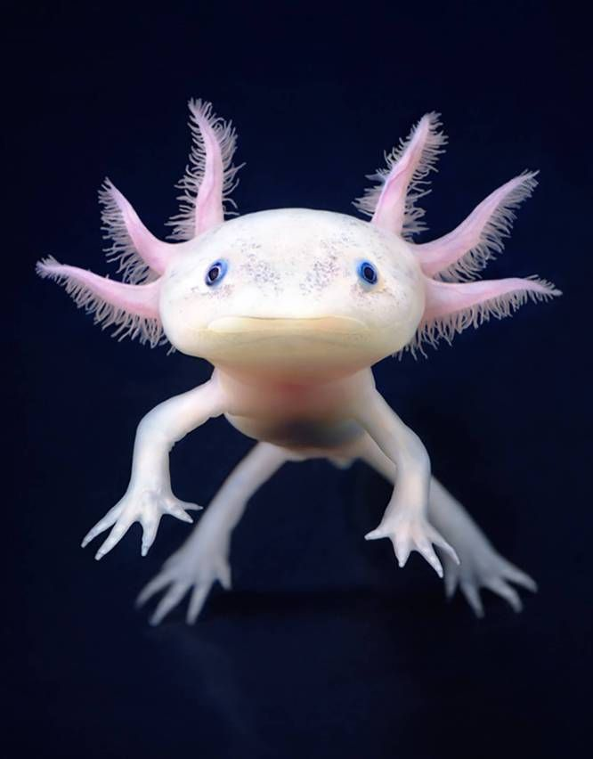

AJOLOTEAJOLOTE
AJOLOTEAJOLOTE
NOMBRE COMÚN: Ajolote
NOMBRE CIENTÍFICO: Ambystoma mexicanum
TIPO: Anfibio DIETA: Carnívoros
ESPERANZA DE VIDA EN LIBERTAD: 10 -15 años
TAMAÑO: Hasta 30 cm PESO: 60 - 220 gr
ESTADO EN LA LISTA ROJA DE LA UICN: En peligro crítico
TENDENCIA DE LA POBLACIÓN ACTUAL: Decreciendo
Sobre el ajolote
Según cuenta la leyenda, el ajolote es el dios azteca del fuego y el relámpago, Xolotl, que se disfrazó de salamandra para evitar ser sacrificado. Pero estos anfibios mexicanos son lo suficientemente impresionantes por sí mismos, por su capacidad de regenerar extremidades perdidas y mantenerse “jóvenes” durante toda su vida.
A diferencia de otras salamandras que se someten a metamorfosis, los ajolotes nunca superan su etapa larvaria, juvenil, un fenómeno llamado neotenia. Esto significa que mantiene su aleta dorsal en forma de renacuajo, que se extiende casi a lo largo de todo su cuerpo, y sus branquias externas plumosas, que sobresalen de la parte posterior de su amplia cabeza. Sus rasgos juveniles incluyen branquias plumosas que brotan de sus cabezas como una melena, pies palmeados, una aleta dorsal que corre a lo largo de su cuerpo y una cola.
Aunque conservan sus branquias, los axolotl adultos también tienen pulmones funcionales y pueden respirar a través de la piel. Y como si ser bebés para siempre no los hiciera lo suficientemente increíbles, sus bocas forman siempre una sonrisa. Esas pequeñas sonrisas dulces pueden convertirse rápidamente en aspiradoras cuando llega la hora de comer. Los ajolotes chupan a sus presas, que incluyen crustáceos, moluscos, huevos de insectos y peces pequeños. Localizados exclusivamente en Xochimilco, cerca de la Ciudad de México, los ajolotes se diferencian de la mayoría de las otras salamandras en que viven permanentemente en el agua.
En casos extremadamente raros, un ajolote progresará a la madurez y emergerá del agua, pero en general, se contentan con permanecer en el fondo de los lagos y canales de Xochimilco. Parientes cercanos de la salamandra tigre, los ajolotes pueden ser bastante grandes, alcanzando hasta 30 centímetros de largo, aunque el tamaño medio suele ser la mitad. Por lo general, son de color negro o marrón moteado, pero las variedades blancas y albinas son algo comunes, especialmente entre los especímenes cautivos.
Para conocer más sobre el ajolote, pulse AQUÍ